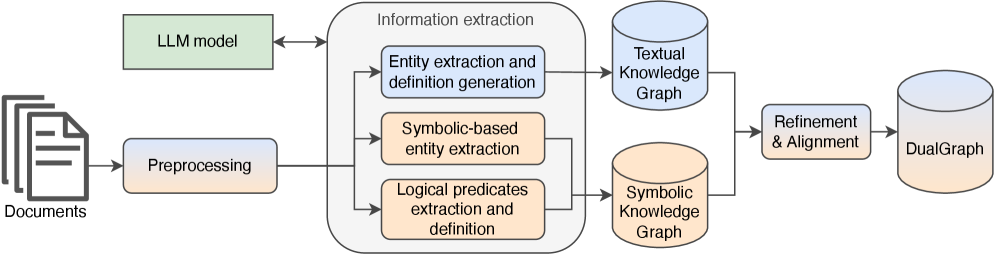
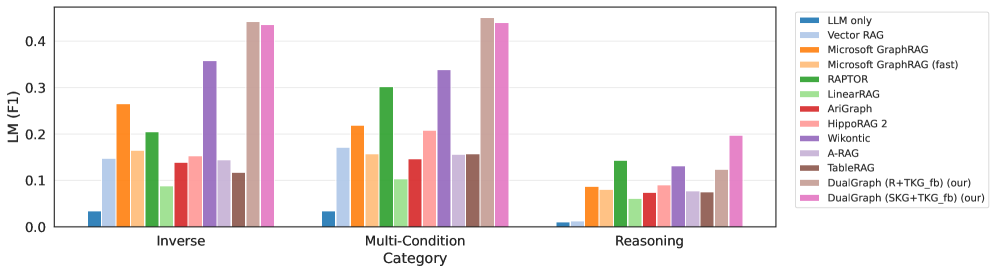
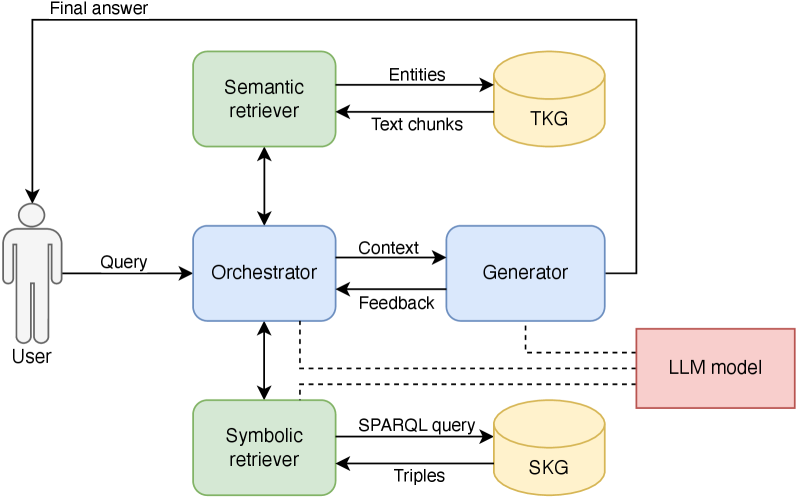
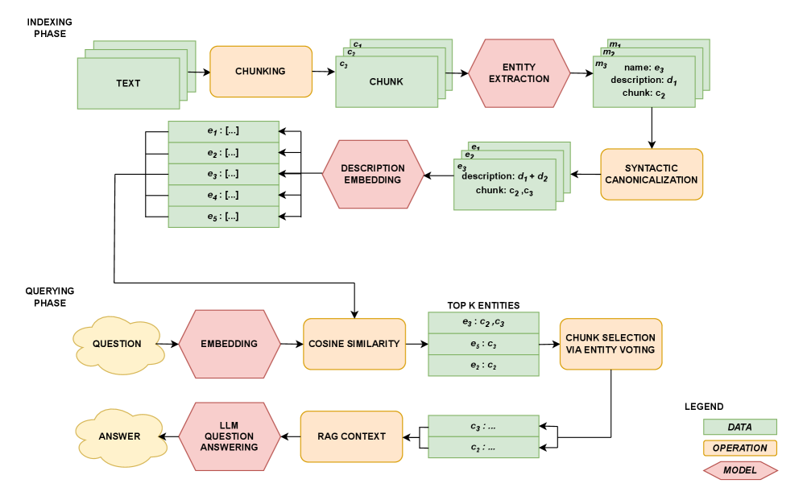
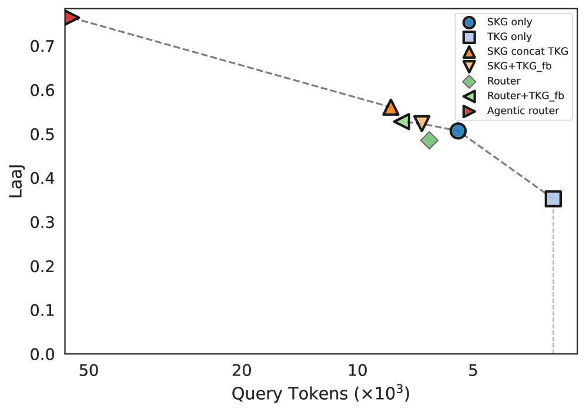

DualGraph introduces a dual-graph RAG framework that outperforms existing methods on semi-structured QA by combining semantic retrieval with symbolic querying, supported by a new benchmark SpecsQA.
本文提出DualGraph，一种结合语义检索与符号查询的双图RAG框架，在半结构化问答任务上显著优于现有方法。同时，作者构建了SpecsQA基准，用于评估跨文档的检索与推理能力。
Deep Note — dualgraph
Key Takeaways - DualGraph combines a Textual Knowledge Graph (TKG) for semantic retrieval and a Symbolic Knowledge Graph (SKG) for exact symbolic querying over semi-structured corpora. - The SpecsQA benchmark, built from a Samsung UK website snapshot, evaluates corpus-level retrieval and reasoning across both open-ended and specification-oriented questions. - DualGraph outperforms dense-retrieval, GraphRAG, symbolic, and table-oriented baselines, especially on inverse and multi-condition queries requiring exhaustive filtering. - The SKG provides formal guarantees for precise operations (e.g., exact filtering, aggregation), while the TKG handles noisy or underspecified natural-language questions.
0) Metadata
- Title: Query Symbolically or Retrieve Semantically? A Dataset and Method for Semi-Structured Question Answering
- Alias: dualgraph
- Authors: Mateusz Czyżnikiewicz, Ryszard Tuora, Adam Kozakiewicz, Tomasz Ziętkiewicz, Mateusz Galiński, Michał Godziszewski, Michał Karpowicz, Timothy Hospedales, Cristina Cornelio
- arXiv ID: 2605.27164
- Published:
- Links:
- Abs: https://arxiv.org/abs/2605.27164
- HTML: https://arxiv.org/html/2605.27164v1
- PDF: https://arxiv.org/pdf/2605.27164
- Tags: retrieval-augmented-generation, semi-structured-qa, knowledge-graph, symbolic-reasoning, benchmark
- Domains: system_safety
- Rating: 3/5 (base 1 + quality 1 + observation 1)
1) Why-read
DualGraph introduces a dual-graph RAG framework that outperforms existing methods on semi-structured QA by combining semantic retrieval with symbolic querying, supported by a new benchmark SpecsQA.
2) CRGP
C — Context
Retrieval-Augmented Generation (RAG) systems typically retrieve evidence via semantic similarity, which works well for unstructured text but fails on semi-structured corpora requiring exact filtering or aggregation. Symbolic approaches support such operations but are brittle on noisy natural-language text. Recent GraphRAG methods improve multi-hop retrieval but lack formal guarantees for precise operations.
R — Related work
- Standard RAG systems (Lewis et al., 2020) retrieve chunks by semantic similarity, effective for unstructured text but limited for semi-structured data.
- GraphRAG approaches (Edge et al., 2025; Peng et al., 2025; Zhuang et al., 2025) augment retrieval with graph representations but lack formal guarantees for exact operations.
- Symbolic systems (Chepurova et al., 2025; Mo et al., 2025) support exact inference but require structured inputs and are not robust to noisy text.
- Existing QA benchmarks (NaturalQuestions, HotpotQA, HybridQA, TAT-QA) focus on single-document or single-table questions, not corpus-level retrieval over semi-structured documents.
G — Gap
Existing RAG systems struggle with semi-structured corpora where questions require exact filtering, aggregation, or exhaustive retrieval over structured attributes across multiple documents. GraphRAG methods improve multi-hop retrieval but lack formal guarantees for precise operations, while symbolic approaches are brittle on noisy natural-language text. No prior benchmark evaluates corpus-level retrieval and reasoning over semi-structured documents combining free-form text and specification tables.
P — Proposal
DualGraph represents documents through two complementary graph views: a Textual Knowledge Graph (TKG) for semantic retrieval and a Symbolic Knowledge Graph (SKG) for symbolic querying over typed subject-predicate-object triples. It provides multiple strategies (direct retrieval, fallback, concatenation, query-dependent routing) to select or combine evidence from both graphs. The SpecsQA benchmark, built from a Samsung UK website snapshot, contains 117 manually curated questions across four categories (inverse, multi-condition, group comparison, reasoning) with both natural-language and canonical list answers.
---
4) Experiments
Main results
DualGraph consistently outperforms state-of-the-art dense-retrieval, GraphRAG, symbolic, and table-oriented baselines across all question types on SpecsQA. The improvement is especially pronounced on inverse queries (e.g., listing all products satisfying constraints) where current RAG systems are particularly limited. Exact numbers are not provided in the truncated text, but the paper states consistent outperformance across evaluation metrics.
Ablation
The paper does not provide explicit ablation numbers in the truncated text, but it notes that the SKG improves precise filtering and exhaustive list retrieval, while the TKG provides robustness for open-ended or underspecified questions, demonstrating complementarity.
Limitations
['The SpecsQA benchmark is built from a single commercial website (Samsung UK), which may limit generalizability to other domains or document structures.', 'The framework relies on manual construction of the Symbolic Knowledge Graph from semi-structured data, which may require significant engineering effort for new corpora.', 'The paper does not provide detailed ablation results or error analysis in the truncated text, leaving open questions about failure modes and component contributions.']
5) Why it matters
- For researchers working on RAG for enterprise documentation or product catalogs, DualGraph offers a principled way to handle mixed structured and unstructured data.
- The SpecsQA benchmark fills a gap in evaluating corpus-level retrieval and reasoning over semi-structured documents, which is common in real-world applications.
- The dual-graph approach provides a template for combining semantic and symbolic methods, relevant to AI safety and system safety when precise answers are required.
6) Next steps
- [ ] Evaluate DualGraph on other semi-structured corpora (e.g., scientific papers, legal documents) to test generalizability.
- [ ] Investigate automated construction of the Symbolic Knowledge Graph from noisy natural-language text to reduce manual effort.
- [ ] Explore integration of DualGraph with agentic RAG systems for iterative reasoning over semi-structured data.
- [ ] Conduct ablation studies to quantify the contribution of each graph view and routing strategy.
7) Scoring
3/5 = base 1 + quality 1 + observation 1
Deep Note — DualGraph
主要结论 - DualGraph结合文本知识图谱（TKG）进行语义检索，以及符号知识图谱（SKG）进行精确符号查询，适用于半结构化语料。 - SpecsQA基准基于三星英国网站快照构建，涵盖开放式和规格导向两类问题，用于评估语料级检索与推理。 - DualGraph在逆查询、多条件查询等需要穷举过滤的任务上，显著优于稠密检索、GraphRAG、符号方法和表格方法等基线。 - SKG提供精确操作（如精确过滤、聚合）的形式化保证，而TKG处理含噪声或未明确指定的自然语言问题。
1) 阅读理由
DualGraph通过双图RAG框架，在结合语义检索与符号查询方面取得突破，并提供了新的半结构化问答基准SpecsQA。
2) CRGP（背景 / 相关工作 / 差距 / 方案）
现有RAG系统主要依赖语义相似度检索，适用于非结构化文本，但在需要精确过滤或聚合的半结构化语料上表现不佳。符号方法支持精确操作，但对噪声自然语言文本脆弱。GraphRAG方法改进了多跳检索，但缺乏精确操作的形式化保证。相关工作包括标准RAG、GraphRAG、符号系统以及现有QA基准，但均未针对半结构化文档的语料级检索与推理进行评估。DualGraph通过双图视图（TKG和SKG）表示文档，并提供多种策略（直接检索、回退、拼接、查询依赖路由）来选择和组合证据。SpecsQA基准包含117个手工策划的问题，涵盖逆查询、多条件、分组比较和推理四类。
3) 实验
DualGraph在SpecsQA基准上，对所有问题类型均一致优于稠密检索、GraphRAG、符号方法和表格方法等基线。尤其在逆查询（如列出满足约束的所有产品）上提升显著，而现有RAG系统在此类任务上表现有限。论文未提供具体数值，但指出在各项评估指标上均有一致优势。
消融实验
论文未提供详细的消融实验数值，但指出SKG提升了精确过滤和穷举列表检索能力，而TKG增强了开放性或未明确指定问题的鲁棒性，两者具有互补性。
局限性
['SpecsQA基准仅基于单一商业网站（三星英国），可能限制其泛化到其他领域或文档结构。', '该框架依赖从半结构化数据手动构建符号知识图谱，对于新语料可能需要大量工程投入。', '论文未提供详细的消融结果或错误分析，关于失败模式和组件贡献的问题尚待解答。']
4) 重要性
- 对于从事企业文档或产品目录RAG的研究者，DualGraph提供了一种处理混合结构化和非结构化数据的系统化方法。
- SpecsQA基准填补了评估半结构化文档语料级检索与推理的空白，这在真实应用中非常常见。
- 双图方法为结合语义与符号方法提供了模板，在需要精确答案的AI安全和系统安全场景中具有相关性。
5) 下一步
- [ ] 在其他半结构化语料（如科学论文、法律文档）上评估DualGraph，以测试其泛化能力。
- [ ] 研究从含噪声自然语言文本自动构建符号知识图谱的方法，以减少人工投入。
- [ ] 探索将DualGraph与智能体RAG系统集成，用于半结构化数据的迭代推理。
- [ ] 进行消融研究，量化每个图视图和路由策略的贡献。




